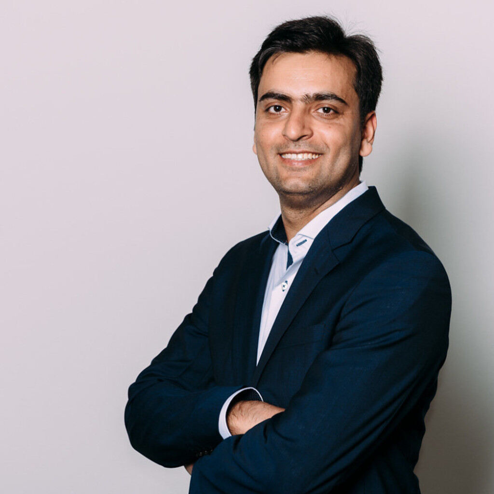

Wasim Babar

Linkdin Profile
SKILLS
Datenanalyst (Manufacturing Engineering) | Airbus on behalf of BpOutX, Hamburg
- Konturdatenanalyse unter Verwendung der Skywise Datenplattform für die NC Tilgungsteams
(FAL & Pre-FAL) zur Sicherstellung von Qualität und datengestützter Entscheidungsfindung
Datensegmentierung und Clustering zur Ermittlung der Grundursachen mit der 8D Metho
für wiederkehrende Ncs
Datenanalyst (Skywise Data Analytics plateform) | Airbus on behalf of Alten, Hamburg
- • Entwicklung eines A350 Interface Point KPI Dashboards zur Visualisierung des Validierungsprozesses im Fuselage (Hamburg / Toulouse)
Datenanalyst (Skywise Data Analytics plateform) | Airbus on behalf of Alten, Hamburg
- Datenanalyst (Skywise Data Analytics plateform) | Airbus on behalf of Alten, Hamburg
Software Entwickler | Enercon on behalf of Alten , Bremen
- Weiterentwicklung eines bestehenden WPF Anwendungstools unter Verwendung des MVVM
pattern in C# mit einer MongoDB-Datenbank
Software Entwickler | Airbus on behalf of Alten, Hamburg
- Entwicklung eines webbasierten Flugaufzeichnungstools mit MVC unter Verwendung von
Java Enterprise Technologien und dem Vaadin Framework
Software Entwickler | Sysmex on behalf of Alten, Norderstedt
- Entwicklung eines Windows Form Budget Automatisierungs-Desktop Tools mit MySQL Datenbankserver
Qualifizierung
Master in Informations und Kommunikationssysteme
Bachelor in Elektrotechnik